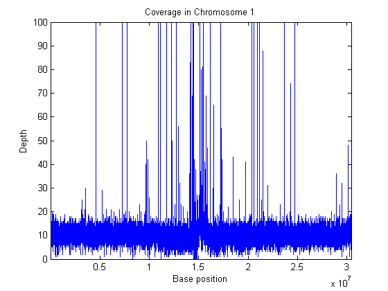
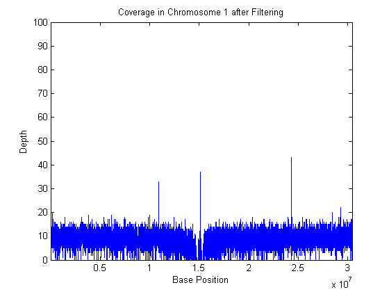
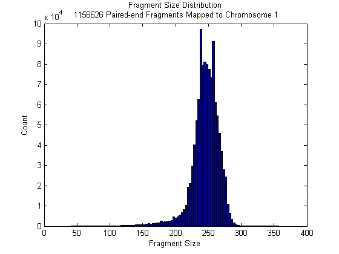
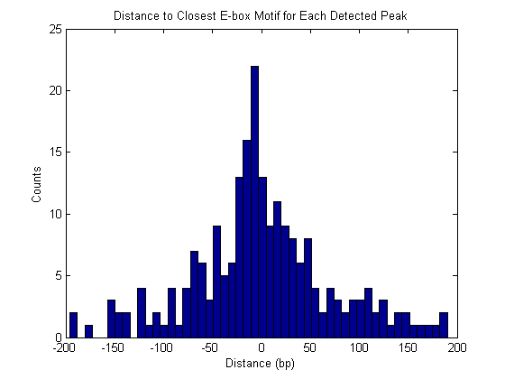

Exploring Protein-DNA Binding Sites from Paired-End ChIP-Seq Data
This demonstration performs a genome-wide analysis of a transcription factor in the Arabidopsis Thaliana (Thale Cress) model organism.
Contents
- Introduction
- Data Set
- Indexing the SAM File and Creating a MATLAB® Interface to Access it
- Exploring the Coverage at Different Resolutions
- Identifying and Filtering Regions with Artifacts
- Recovering Sequencing Fragments from the Paired-End Reads
- Exploring the Coverage Using Fragment Alignments
- Finding Significant Peaks in the Coverage Signal
- References
For enhanced performance, it is recommended that you run this demo on a 64-bit platform, because the memory footprint is close to 2 Gb. On a 32-bit platform, if you receive "Out of memory" errors when running this demo, try increasing the virtual memory (or swap space) of your operating system or try setting the 3GB switch (32-bit Windows® XP only). These techniques are described in this document.
Introduction
ChIP-Seq is a technology that is used to identify transcription factors that interact with specific DNA sites. First chromatin immunoprecipitation enriches DNA-protein complexes using an antibody that binds to a particular protein of interest. Then, all the resulting fragments are processed using high-throughput sequencing. Sequencing fragments are mapped back to the reference genome. By inspecting over-represented regions it is possible to mark the genomic location of DNA-protein interactions.
In this demonstration, short reads are produced by the paired-end Illumina® platform. Each fragment is reconstructed from two short reads successfully mapped, with this the exact length of the fragment can be computed. Using paired-end information from sequence reads maximizes the accuracy of predicting DNA-protein binding sites.
Data Set
This demo explores the paired-end ChIP-Seq data generated by Wang et.al. [1] using the Illumina® platform. The data set has been courteously submitted to the Gene Expression Omnibus repository with accession number GSM424618. The unmapped paired-end reads can be obtained from the NCBI FTP site.
This demonstration assumes that you:
(1) downloaded and uncompressed the unmapped paired-end reads (SRR054715_1.fasta.bz2 and SRR054715_2.fasta.bz2),
(2) produced a SAM formatted file by mapping the short reads to the Thale Cress reference genome, using a mapper such as BWA [2], Bowtie, or SSAHA2 (which is the mapper used by authors of [1]), and,
(3) ordered the SAM formatted file by reference name first, then by genomic position.
For the published version of this demo, 8,653,488 paired-end short reads are mapped using the BWA mapper [2]. BWA produced a SAM formatted file (aratha.sam) with 17,306,976 records (8,653,488 x 2). Repetitive hits were randomly chosen, and only one hit is reported, but with lower mapping quality. The SAM file was ordered using SAMtools [3] before being loaded into MATLAB.
The last part of the demo also assumes that you downloaded the reference genome for the Thale Cress model organism (which includes five chromosomes). Uncomment the following lines of code to download the reference from the NCBI repository:
% getgenbank('NC_003070','FileFormat','fasta','tofile','ach1.fasta'); % getgenbank('NC_003071','FileFormat','fasta','tofile','ach2.fasta'); % getgenbank('NC_003074','FileFormat','fasta','tofile','ach3.fasta'); % getgenbank('NC_003075','FileFormat','fasta','tofile','ach4.fasta'); % getgenbank('NC_003076','FileFormat','fasta','tofile','ach5.fasta');
Indexing the SAM File and Creating a MATLAB® Interface to Access it
Use BioIndexedFile to index the SAM formatted file. This allows quick and efficient access to the short reads from MATLAB without having to load the whole content of the file into memory. Display a small number of the short reads. Observe that each short read is mapped to one of the five reference chromosomes or it appears as unmapped (*).
bif = BioIndexedFile('sam',which('aratha.sam'),'indexedbykeys',false) i = 1:1000000:17000000; % some random sequences disp(getEntryByIndex(bif,i))
Source File: aratha.sam
Path: C:\demos\chipsepedemo
Size: 3.463918e+009 bytes
Date: 20-Oct-2010 07:24:59
Index file exists.
Index File: aratha.sam.idx
Path: C:\demos\chipsepedemo
Size: 655444776 bytes
Date: 20-Oct-2010 09:20:13
Mapping object to aratha.sam.idx ...
Done.
bif =
BioIndexedFile
Properties:
FileFormat: 'sam'
InputFile: 'C:\demos\chipsepedemo\aratha.sam'
IndexFile: 'C:\demos\chipsepedemo\aratha.sam.idx'
NumEntries: 17306976
IndexedByKeys: 0
MemoryMappedIndex: 1
Interpreter: @samread
SRR054715.3174659 163 Chr1 1 18 8S32M = 205 244 ACACTAAACCCTAAACCCTAAACCCTAAACCCTAAACCTC BBBBB;-;BBBC?-BBBBB=B?BBBB<8BBBBB0@,69CB XT:A:M NM:i:0 SM:i:18 AM:i:18 XM:i:0 XO:i:0 XG:i:0 MD:Z:32
SRR054715.5925556 147 Chr1 9555568 60 40M = 9555377 -231 TTCACCTCATACAAAAATGTCATGATTTGAATACAATTAA B?BBBBBBBBBB;BBBBB-;BBBBB;?61;CBCBBCBBBC XT:A:U NM:i:0 SM:i:37 AM:i:37 X0:i:1 X1:i:0 XM:i:0 XO:i:0 XG:i:0 MD:Z:40
SRR054715.7954729 83 Chr1 18823581 60 40M = 18823372 -249 AGTTCCTAACGTAACAGTTAATCTCTTTAACACATTTCTC 6'6?+<7<?7<BBBBBBBBCBB?B=BBBBCBBBBBBBBBB XT:A:U NM:i:0 SM:i:37 AM:i:37 X0:i:1 X1:i:0 XM:i:0 XO:i:0 XG:i:0 MD:Z:40
SRR054715.3770683 163 Chr1 29012143 60 40M = 29012357 254 GCAACGTGAAAAGATCATGTGAGATATTTTAGGGATTACA B<,30==BB8<9B8BBB;B=BC=.==BB6,?B;BB-B-;- XT:A:U NM:i:2 SM:i:37 AM:i:37 X0:i:1 X1:i:0 XM:i:2 XO:i:0 XG:i:0 MD:Z:37T1T0
SRR054715.2025934 147 Chr2 3367512 60 40M = 3367293 -259 GATCACTCTTCCACTCTTGCACTTGCCTTCATTCGGTTCT ;B?CB-CBBB?9,0;BBBB8B9448B8B=CBBBBBB@2=B XT:A:U NM:i:2 SM:i:37 AM:i:37 X0:i:1 X1:i:0 XM:i:2 XO:i:0 XG:i:0 MD:Z:5A20A13
SRR054715.3782337 147 Chr2 7449564 60 40M = 7449359 -245 ACCGCATAAGCAATGTCGGGTCTAGTTATCGTCAAATATA BB=@4A4AB@8+BB?=2@BB60<BBB@>@??<?<BBBBBB XT:A:U NM:i:0 SM:i:37 AM:i:37 X0:i:1 X1:i:0 XM:i:0 XO:i:0 XG:i:0 MD:Z:40
SRR054715.8370121 147 Chr2 17510273 60 40M = 17510062 -251 GCAAAGGAGAAGGAAGCATGTGATGAGCAACATGATAAAA B*29*?;8BBBB;BC@''.=+=BBB-=67+BBCBBB4+@. XT:A:U NM:i:2 SM:i:37 AM:i:37 X0:i:1 X1:i:0 XM:i:2 XO:i:0 XG:i:0 MD:Z:4T21A13
SRR054715.1558535 163 Chr3 7144734 60 40M = 7144936 242 TCCTATTACATGATGAATTCCCCATGAAAAATGGTCTAGT BBCBBCBBBB?=BB?BBBBBCBCCCBBBBB8???=BBB-- XT:A:U NM:i:0 SM:i:37 AM:i:37 X0:i:1 X1:i:0 XM:i:0 XO:i:0 XG:i:0 MD:Z:40
SRR054715.6448030 99 Chr3 14193252 0 40M = 14193488 276 CCGCAACGCTCGCAAAGGTGGATAGTGAGAATAATAAGGG BBBB?BBBBBBCBB6BBB?BBBB=B99BBBBBB=BBC3'. XT:A:R NM:i:2 SM:i:0 AM:i:0 X0:i:2 X1:i:1 XM:i:2 XO:i:0 XG:i:0 MD:Z:20C17T1 XA:Z:Chr3,+14193252,40M,2;Chr2,+9690,40M,3;
SRR054715.2685734 147 Chr3 20725298 60 40M = 20725096 -242 GGTGTAAGAGACTTGAGAGTTGACCAATCTGCGAACATCA ;'9BBBBB?B>4@>@BBCBBBBBBBBBB?6@9@CCBCBCC XT:A:U NM:i:0 SM:i:37 AM:i:37 X0:i:1 X1:i:0 XM:i:0 XO:i:0 XG:i:0 MD:Z:40
SRR054715.4718782 163 Chr4 3998835 0 40M = 3999038 243 TACACATAAAATCAAGTCATATTCGACTCCAAAACACTAA BCBCBCCBBBB?CCBBCCBBBCBBBCBBBBBBCBB?C8BB XT:A:R NM:i:2 SM:i:0 AM:i:0 X0:i:3 X1:i:248 XM:i:2 XO:i:0 XG:i:0 MD:Z:7G1C30
SRR054715.2395180 99 Chr4 13639101 60 40M = 13639300 239 TGATGTTAACAAAAGATTGGTGGATGTACAATACTTGAGT BBBB@99,66>?2?<<,'9BBBBBB4,,6?4<''3B<0'3 XT:A:U NM:i:2 SM:i:37 AM:i:37 X0:i:1 X1:i:0 XM:i:2 XO:i:0 XG:i:0 MD:Z:17C20A1
SRR054715.1661718 147 Chr5 4622109 60 40M = 4621897 -252 ACATCTAATATCAATCTCTTTGCTTATAAATATATTTTTT ;139?C-BBBBBB-BB8@ABBB?@49?,2+=BBBBBBBBB XT:A:U NM:i:1 SM:i:37 AM:i:37 X0:i:1 X1:i:0 XM:i:1 XO:i:0 XG:i:0 MD:Z:16A23
SRR054715.6278779 147 Chr5 11732526 15 40M = 11732321 -245 ACGATCTTATAAGCCTAAGTAGTGTTTCCTTGTTAGAAGA BBB9990<6BBBBBBB=BBBBBBB8@4>B?A9@BCBB;B8 XT:A:U NM:i:0 SM:i:15 AM:i:15 X0:i:1 X1:i:14 XM:i:0 XO:i:0 XG:i:0 MD:Z:40
SRR054715.3699144 147 Chr5 20778416 60 40M = 20778189 -267 TTTATACAACAAACCGTCTTAAGAAACCATATATTAAAAC ?B-B1'0-+8<=6--;?=<6.BB0=BB;6=BBBBBBBC-B XT:A:U NM:i:2 SM:i:37 AM:i:37 X0:i:1 X1:i:0 XM:i:2 XO:i:0 XG:i:0 MD:Z:2C2C34
SRR054715.1186676 77 * 0 0 * * 0 0 ACCAGCTAGATCTAGTGTCTCTATTATATTATGACAGACC BBBBBBBBBBCBBBBB=BBBBB8BBBBBBBB1)6BB8B.9
SRR054715.4370803 77 * 0 0 * * 0 0 TGTAATTTACAAAATAGCCTCCAACACTCTATTCAACAAT BBBBBBBB?BB=B=BB8BBB/677=B.BBC8=-;BCB.6-
Use the method getDictionary to obtain a list of all the reference names present in the source file of BioIndexedFile.
getDictionary(bif)
ans =
'Chr1'
'Chr2'
'Chr3'
'Chr4'
'Chr5'
To create local alignments and look at the coverage we need to construct a BioMap. BioMap can use the BioIndexedFile as the interface to the actual data, thus minimizing the amount of data that is actually loaded to the workspace. The remainder of this demonstration focuses on the analysis of one of the five chromosomes, Chr1. Create a BioMap to access the short reads mapped to the first chromosome.
tic bm1 = BioMap(bif,'SubsetReference','Chr1'); toc
Elapsed time is 4.810797 seconds.
Further inspection of BioMap can indicate the range of the mapped short reads and how many short reads are mapped to the first chromosome.
x1 = min(getStart(bm1)); x2 = max(getStop(bm1)); fprintf('Chromosome 1 Range: %d-%d\n',x1,x2) fprintf('Chromosome 1 Number of Reads: %d\n',bm1.NSeqs)
Chromosome 1 Range: 1-30427671 Chromosome 1 Number of Reads: 3151047
Exploring the Coverage at Different Resolutions
To explore the coverage for the whole range of the chromosome, a binning algorithm is required. The getBaseCoverage method produces a coverage signal based on effective alignments. It also allows you to specify a bin width to control the size (or resolution) of the output signal. However internal computations are still performed at the base pair (bp) resolution. This means that despite setting a large bin size, narrow peaks in the coverage signal can still be observed. Once the coverage signal is plotted you can program the figure's data cursor to display the genomic position when using the tooltip. You can zoom and pan the figure to determine the position and height of the ChIP-Seq peaks.
[cov,bin] = getBaseCoverage(bm1,x1,x2,'binWidth',1000,'binType','max'); figure plot(bin,cov) xlim([x1,x2]) ylim([0 100]) xlabel('Base position') ylabel('Depth') title('Coverage in Chromosome 1') mdc = @(h,e) {['Position: ',num2str(get(e,'Position')*[1;0])], ['Y: ',num2str(get(e,'Position')*[0;1])]} set(datacursormode(gcf),'UpdateFcn',mdc) datacursormode on
mdc =
@(h,e){['Position: ',num2str(get(e,'Position')*[1;0])],['Y: ',num2str(get(e,'Position')*[0;1])]}
 It is also possible to explore the coverage signal at the bp resolution (also referred to as the pile-up profile). Explore one of the large peaks observed in the data at position 4598837.
p1 = 4598837-1000; p2 = 4598837+1000; figure plot(p1:p2,getBaseCoverage(bm1,p1,p2)) xlim([p1,p2]) xlabel('Base position') ylabel('Depth') title('Coverage in Chromosome 1') set(datacursormode(gcf),'UpdateFcn',mdc) datacursormode on

Identifying and Filtering Regions with Artifacts
Observe the large peak with coverage depth of 800+ between positions 4599029 and 4599145. Investigate how these reads are aligning to the reference chromosome. You can retrieve a subset of these reads enough to satisfy a coverage depth of 25, since this is sufficient to understand what is happening in this region. Use getIndex to obtain indices to this subset. Then use getCompactAlignment to display the corresponding multiple alignment of the short-reads.
i = getIndex(bm1,4599029,4599145,'depth',25); bmx = getSubset(bm1,i,'indexed',false) getCompactAlignment(bmx,4599029,4599145)
bmx =
BioMap
Properties:
Reference: 'Chr1'
Signature: {62x1 cell}
Start: [62x1 uint32]
MappingQuality: [62x1 uint8]
Flag: [62x1 uint16]
MatePosition: [62x1 uint32]
Quality: {62x1 cell}
Sequence: {62x1 cell}
Header: {62x1 cell}
NSeqs: 62
Name: ''
ans =
AGTT AATCAAATAGAAAGCCCCGAGGGCGCCATATCCTAGGCGC AAACTATGTGATTGAATAAATCCTCCTCTATCTGTTGCGG GAGGACTCCTTCTCCTTCCCCTTTTGG
AGTGC TCAAATAGAAAGCCCCGAGGGCGCCATATTCTAGGAGCCC GAATAAATCCTCCTCTATCTGTTGCGGGTCGAGGACTCCT CTCCTGCCCCTTTTGG
AGTTCAA CCCGAGGGCGCCATATTCTAGGAGCCCAAACTATGTGATT TATCTGTTGCGGGTCGAGGACTCCTTCTCCTTCCCCTTCT
AGTTCAATCAAATAGAAAGC TTCTAGGAGCCCAAACTATGTGATTGAATAAATCCTCCTC AGGACTCCTTCTCCTTCCCCTTTTGG
AGTT AAGGAGCCCAAAATATGTGATTGAATAAATCCACCTCTAT GGACTCCTTCTCCTTCCCCTTTTGG
AGTACAATCAAATAGAAAGCCCCGAGGGCGCCATA TAGGAGCCCAAACTATGTGATTGAATAAATCCTCCTCTAT CCTTCACCTTCCCCTTTTGG
CGTACAATCAAATAGAAAGCCCCGAGGGCGCCATATTC GGAGCCCAAACTATGTGATTGAATAAATCCTCCTCTATCT TTCCCCTTTTGG
CGTACAATCAAATAGAAAGCCCCGAGGGCGCCATATTC GGAGCCCAAGCTATGTGATTGAATAAATCCTCCTCTATCT
CGTACAATCAAATAGAAAGCCCCGAGGGCGCCATATTC GGAGCCCAAACTATGTGATTGAATAAATCCTCCTCTATCT
CGTACAATCAAATAGAAAGCCCCGAGGGCGCCATATTC GGAGCCCAAGCTATGTGATTGAATAAATCCTCCTCTATCT
AGTTCAATCAAATAGAAAGCCCCGAGGGCGCCATATTCTA GAGCCCAAACTATGTGATTGAATAAATCCTCCTCTATCTG
GATACAATCAAATAGAAAGCCCCGAGGGCGCCATATTCTA GAGCCCAAACTATGTGATTGAATAAATCCTCATGTATCTG
GATACAATCAAATAGAAAGCCCCGAGGGCGCCATATTCTA GAGCCCAAACTATGTGATTGAATAAATCCTCCTCTATCTG
GATACAATCAAATAGAAAGCCCCGAGGGCGCCATATTCTA GAGCCCAAACTATGTGATTGAATAAATCCTCCTCTATCTG
GATACAATCAAATAGAAAGCCCCGAGGGCGCCATATTCTA GAGCCCAAATTATGTGATTGAATAAATCCTCCTCTATCTG
ATACAATCAAATAGAAAGCCCCGAGGGCGCCATATTCTAG CCCAAACTATGTGATTGAATAAATCCTCCTCTATCTGTTG
ATACAATCAAATAGAAAGCCCCGAGGGCGCCATATTCTAG CACAAACTATGTGATTGAATAAATCCTCCTCTATCTGTTG
ATACAATCAAATAGAAAGCCCCGAGGGCGCCATATTCTAG CCAAACTATGTGATTGAATAAATCCTCCTCTATCTGTTGC
ATACAATCAAATAGAAAGCCCCGAGGGCGCCATATTCTAG
ATACAATCAAATAGAAAGCCCCGAGGGCGCCATATTCTAG
ATACAATCAAATAGAAAGCCCCGAGGGCGCCATATTCTAG
ATACAATCAAATAGAAAGCCCCGAGGGCGCCATATTCTAG
ATACAATCAAATAGAAAGCCCCGGGGGCGCCATATTCTAG
ATTGAGTCAAATAGAAAGCCCCGAGGGCGCCATATTCTAG
ATACAATCAAATAGAAAGCCCCGAGGGCGCCATATTCTAG
CAATCAAATAGAAAGCCCCGAGGGCGCCATATTCTAGGAG
CAATCAAATAGAAAGCCCCGAGGGCGCCATATTCTAGGAG
TAGGAGCCCAAACTATGTGATTGAATAAATCCTCCTCTAT
TAGGAGCCCAAACTATGCCATTGAATAAATCCTCCGCTAT
GGTGCACAAACTATGTGATTGAATAAATCCTCCTCTATCT
GAGCCCAAACTATGTGATTGAATAAATCCTCCTCTATCTG
GAGCCCAAACTATGTGATTGAATAAATCCTCCTCTATCTG
GAGCCCAAACTATGTGATTGAATAAATCCTCCTCTATCTG
GAGCCCAAACTATGTGATTGAATAAATCCTCCTCTATCTG
GAGCCCAAACTATGTGATTGAATAAATCCTCCTCTATCTG
In addition to visually confirming the alignment, you can also explore the mapping quality for all the short reads in this region, as this may hint to a potential problem. In this case, less than one percent of the short reads have a Phred quality of 60, indicating that the mapper most likely found multiple hits within the reference genome, hence assigning a lower mapping quality.
figure i = getIndex(bm1,4599029,4599145); hist(double(getMappingQuality(bm1,i))) title('Mapping Quality of the reads between 4599029 and 4599145') xlabel('Phred Quality Score') ylabel('Number of Reads')

Most of the large peaks in this data set occur due to satellite repeat regions or due to its closeness to the centromere [4], and show characteristics similar to the example just explored. You may explore other regions with large peaks using the same procedure.
To prevent these problematic regions, two techniques are used. First, given that the provided data set uses paired-end sequencing, by removing the reads that are not aligned in a proper pair reduces the number of potential aligner errors or ambiguities. You can achieve this by exploring the flag field of the SAM formatted file, in which the second less significant bit is used to indicate if the short read is mapped in a proper pair.
i = find(bitget(getFlag(bm1),2)); bm1_filtered = getSubset(bm1,i)
bm1_filtered =
BioMap
Properties:
Reference: 'Chr1'
Signature: [3040722x1 File indexed property]
Start: [3040722x1 File indexed property]
MappingQuality: [3040722x1 File indexed property]
Flag: [3040722x1 File indexed property]
MatePosition: [3040722x1 File indexed property]
Quality: [3040722x1 File indexed property]
Sequence: [3040722x1 File indexed property]
Header: [3040722x1 File indexed property]
NSeqs: 3040722
Name: ''
Second, consider only uniquely mapped reads. You can detect reads that are equally mapped to different regions of the reference sequence by looking at the mapping quality, because BWA assigns a lower mapping quality (less than 60) to this type of short read.
i = find(getMappingQuality(bm1_filtered)==60); bm1_filtered = getSubset(bm1_filtered,i)
bm1_filtered =
BioMap
Properties:
Reference: 'Chr1'
Signature: [2313252x1 File indexed property]
Start: [2313252x1 File indexed property]
MappingQuality: [2313252x1 File indexed property]
Flag: [2313252x1 File indexed property]
MatePosition: [2313252x1 File indexed property]
Quality: [2313252x1 File indexed property]
Sequence: [2313252x1 File indexed property]
Header: [2313252x1 File indexed property]
NSeqs: 2313252
Name: ''
Visualize again the filtered data set using both, a coarse resolution with 1000 bp bins for the whole chromosome, and a fine resolution for a small region of 20,000 bp. Most of the large peaks due to artifacts have been removed.
[cov,bin] = getBaseCoverage(bm1_filtered,x1,x2,'binWidth',1000,'binType','max'); figure plot(bin,cov) xlim([x1,x2]) ylim([0 100]) xlabel('Base Position') ylabel('Depth') title('Coverage in Chromosome 1 after Filtering') set(datacursormode(gcf),'UpdateFcn',mdc) datacursormode on p1 = 24275801-10000; p2 = 24275801+10000; figure plot(p1:p2,getBaseCoverage(bm1_filtered,p1,p2)) xlabel('Base Position') ylabel('Depth') title('Coverage in Chromosome 1 after Filtering') set(datacursormode(gcf),'UpdateFcn',mdc) datacursormode on

Recovering Sequencing Fragments from the Paired-End Reads
In Wang's paper [1] it is hypothesized that paired-end sequencing data has the potential to increase the accuracy of the identification of chromosome binding sites of DNA associated proteins because the fragment length can be derived accurately, while when using single-end sequencing it is necessary to resort to a statistical approximation of the fragment length, and use it indistinctly for all putative binding sites.
Use the paired-end reads to reconstruct the sequencing fragments. First, get the indices for the forward and the reverse reads in each pair. This information is captured in the fifth bit of the flag field, according to the SAM file format.
fow_idx = find(~bitget(getFlag(bm1_filtered),5)); rev_idx = find(bitget(getFlag(bm1_filtered),5));
SAM-formatted files use the same header strings to identify pair mates. By pairing the header strings you can determine how the short reads in BioMap are paired. To pair the header strings, simply order them in ascending order and use the sorting indices (hf and hr) to link the unsorted header strings.
[~,hf] = sort(getHeader(bm1_filtered,fow_idx)); [~,hr] = sort(getHeader(bm1_filtered,rev_idx)); mate_idx = zeros(numel(fow_idx),1); mate_idx(hf) = rev_idx(hr);
Use the resulting fow_idx and mate_idx variables to retrieve pair mates. For example, retrieve the paired-end reads for the first 10 fragments.
for j = 1:10 disp(getInfo(bm1_filtered, fow_idx(j))) disp(getInfo(bm1_filtered, mate_idx(j))) end
SRR054715.6849385 163 20 60 40M AACCCTAAACCTCTGAATCCTTAATCCCTAAATCCCTAAA BBBBBBBBBBCBCB?2?BBBBB@7;BBC?7=7?BCC4*)3 SRR054715.6849385 83 229 60 40M CCTATTTCTTGTGGTTTTCTTTCCTTCACTTAGCTATGGA 06BBBB=BBBBBBBBBBBBBBA6@@@9<*9BBA@>BBBBB SRR054715.6992346 99 20 60 40M AACCCTAAACCTCTGAATCCTTAATCCCTAAATCCCTAAA =B?BCB=2;BBBBB=B8BBCCBBBBBBBC66BBB=BC8BB SRR054715.6992346 147 239 60 40M GTGGTTTTCTTTCCTTCACTTAGCTATGGATGGTTTATCT BBCBB6B?B0B8B<'.BBBBBBBB=BBBBB6BBBBB;*6@ SRR054715.8438570 163 47 60 40M CTAAATCCCTAAATCTTTAAATCCTACATCCATGAATCCC BC=BBBBCBB?==BBB;BB;?BBB8BCB??B-BB<*<B;B SRR054715.8438570 83 274 60 40M TATCTTCATTTGTTATATTGGATACAAGCTTTGCTACGAT BBBBB=;BBBBBBBBB;6?=BBBBBBBB<*9BBB;8BBB? SRR054715.1676744 163 67 60 40M ATCCTACATCCATGAATCCCTAAATACCTAATCCCCTAAA BBCB>4?+<BB6BB66BBC?77BBCBC@4ABB-BBBCCBB SRR054715.1676744 83 283 60 40M TTGTTATATTGGATACAAGCTTTGCTACGATCTACATTTG CCB6BBB93<BBBB>>@B?<<?BBBBBBBBBBBBBBBBBB SRR054715.6820328 163 73 60 40M CATCCATGAATCCCTAAATACCTAATTCCCTAAACCCGAA BB=08?BB?BCBBB=8BBB8?CCB-B;BBB?;;?BB8B;8 SRR054715.6820328 83 267 60 40M GTTGGTGTATCTTCATTTGTTATATTGGATACGAGCTTTG BBBBB646;BB8@44BB=BBBB?C8BBBB=B6.9B8CCCB SRR054715.1559757 163 103 60 40M TAAACCCGAAACCGGTTTCTCTGGTTGAAACTCATTGTGT BBBBBCBBBBBBBBBBBCBBBB?BBBB<;?*?BBBBB7,* SRR054715.1559757 83 311 60 40M GATCTACATTTGGGAATGTGAGTCTCTTATTGTAACCTTA <?BBBBB?7=BBBBBBBBBBBBBB@;@>@BBBBBBBBBBB SRR054715.5658991 163 103 60 40M CAAACCCGAAACCGGTTTCTCTGGTTGAAACTCATTGTGT 7?BBBBBB;=BBBB?8B;B-;BCB-B<49<6B8-BB?+?B SRR054715.5658991 83 311 60 40M GATCTACATTTGGGAATGTGAGTCTCTTATTGTAACCTTA 3,<-BBCBBBBBB?=BBBBA<ABBBBBBBBB?79BBB?BB SRR054715.4625439 163 143 60 40M ATATAATGATAATTTTAGCGTTTTTATGCAATTGCTTATT BBBBB@,*<8BBB++2B6B;+6B8B;8+9BB0,'9B=.=B SRR054715.4625439 83 347 60 40M CTTAGTGTTGGTTTATCTCAAGAATCTTATTAATTGTTTG +BB8B0BBB?BBBB-BBBB22?BBB-BB6BB-BBBBBB?B SRR054715.1007474 163 210 60 40M ATTTGAGGTCAATACAAATCCTATTTCTTGTGGTTTGCTT BBBBBBBB;.>BB6B6',BBBCBB-08BBBBB;CB9630< SRR054715.1007474 83 408 60 40M TATTGTCATTCTTACTCCTTTGTGGAAATGTTTGTTCTAT BBB@AABBBCCCBBBBBBB=BBBCB8BBBBB=B6BCBB77 SRR054715.7345693 99 213 60 40M TGAGGTCAATACAAATCCTATTTCTTGTGGTTTTCTTTCT B>;>BBB9,<6?@@BBBBBBBBBBBBBB7<9BBBBBB6*' SRR054715.7345693 147 393 60 40M TTATTTTTGGACATTTATTGTCATTCTTACTCCTTTGGGG BB-?+?C@>9BBBBBB6.<BBB-BBB94;A4442+49';B
Use the paired-end indices to construct a new BioMap with the minimal information needed to represent the sequencing fragments. First, calculate the insert sizes.
J = getStop(bm1_filtered, fow_idx); K = getStart(bm1_filtered, mate_idx); L = K - J - 1;
Obtain the new signature (or CIGAR string) for each fragment by using the short read original signatures separated by the appropriate number of skip CIGAR symbols (N).
n = numel(L); cigars = cell(n,1); for i = 1:n cigars{i} = sprintf('%dN' ,L(i)); end cigars = strcat( getSignature(bm1_filtered, fow_idx),... cigars,... getSignature(bm1_filtered, mate_idx));
Reconstruct the sequences for the fragments by concatenating the respective sequences of the paired-end short reads.
seqs = strcat( getSequence(bm1_filtered, fow_idx),...
getSequence(bm1_filtered, mate_idx));
Calculate and plot the fragment size distribution.
J = getStart(bm1_filtered,fow_idx); K = getStop(bm1_filtered,mate_idx); L = K - J + 1; figure hist(double(L),100) title(sprintf('Fragment Size Distribution\n %d Paired-end Fragments Mapped to Chromosome 1',n)) xlabel('Fragment Size') ylabel('Count')
Construct a new BioMap to represent the sequencing fragments. With this, you will be able explore the coverage signals as well as local alignments of the fragments.
bm1_fragments = BioMap('Sequence',seqs,'Signature',cigars,'Start',J)
bm1_fragments =
BioMap
Properties:
Reference: ''
Signature: {1156626x1 cell}
Start: [1156626x1 uint32]
MappingQuality: [0x1 uint8]
Flag: [0x1 uint16]
MatePosition: [0x1 uint32]
Quality: {0x1 cell}
Sequence: {1156626x1 cell}
Header: {0x1 cell}
NSeqs: 1156626
Name: ''
Exploring the Coverage Using Fragment Alignments
Compare the coverage signal obtained by using the reconstructed fragments with the coverage signal obtained by using individual paired-end reads. Notice that enriched binding sites, represented by peaks, can be better discriminated from the background signal.
cov_reads = getBaseCoverage(bm1_filtered,x1,x2,'binWidth',1000,'binType','max'); [cov_fragments,bin] = getBaseCoverage(bm1_fragments,x1,x2,'binWidth',1000,'binType','max'); figure plot(bin,cov_reads,bin,cov_fragments) xlim([x1,x2]) xlabel('Base position') ylabel('Depth') title('Coverage Comparison') legend('Short Reads','Fragments') set(datacursormode(gcf),'UpdateFcn',mdc) datacursormode on

Perform the same comparison at the bp resolution. In this dataset, Wang et.al. [1] investigated a basic helix-loop-helix (bHLH) transcription factor. bHLH proteins typically bind to a consensus sequence called an E-box (with a CANNTG motif). Use fastaread to load the reference chromosome, search for the E-box motif in the 3' and 5' directions, and then overlay the motif positions on the coverage signals. This example works over the region 1-200,000, however the figure limits are narrowed to a 3000 bp region in order to better depict the details.
p1 = 1; p2 = 200000; cov_reads = getBaseCoverage(bm1_filtered,p1,p2); [cov_fragments,bin] = getBaseCoverage(bm1_fragments,p1,p2); chr1 = fastaread('ach1.fasta'); mp1 = regexp(chr1.Sequence(p1:p2),'CA..TG')+3+p1; mp2 = regexp(chr1.Sequence(p1:p2),'GT..AC')+3+p1; motifs = [mp1 mp2]; figure plot(bin,cov_reads,bin,cov_fragments) hold on plot([1;1;1]*motifs,[0;max(ylim);NaN],'r') xlabel('Base position') ylabel('Depth') title('Coverage Comparison') legend('Short Reads','Fragments','E-box motif') set(datacursormode(gcf),'UpdateFcn',mdc) datacursormode on xlim([111000 114000])

Observe that it is not possible to associate each peak in the coverage signals with an E-box motif. This is because the length of the sequencing fragments is comparable to the average motif distance, blurring peaks that are close. Plot the distribution of the distances between the E-box motif sites.
motif_sep = diff(sort(motifs)); figure hist(motif_sep(motif_sep<500),50) title('Distance (bp) between adjacent E-box motifs') xlabel('Distance (bp)') ylabel('Counts')

Finding Significant Peaks in the Coverage Signal
Use the function mspeaks to perform peak detection with Wavelets denoising on the coverage signal of the fragment alignments. Filter putative ChIP peaks using a height filter to remove peaks that are not enriched by the binding process under consideration.
putative_peaks = mspeaks(bin,cov_fragments,'noiseestimator',20,... 'heightfilter',10,'showplot',true); hold on plot([1;1;1]*motifs(motifs>p1 & motifs<p2),[0;max(ylim);NaN],'r') legend('Coverage from Fragments','Wavelet Denoised Coverage','Putative ChIP peaks','E-box Motifs') xlabel('Base position') ylabel('Depth') title('ChIP-Seq Peak Detection') set(datacursormode(gcf),'UpdateFcn',mdc) datacursormode on xlim([111000 114000])

Use the knnsearch function to find the closest motif to each one of the putative peaks. As expected, most of the enriched ChIP peaks are close to an E-box motif [1]. This reinforces the importance of performing peak detection at the finest resolution possible (bp resolution) when the expected density of binding sites is high, as it is in the case of the E-box motif. It also demonstrates that for this type of analysis, paired-end sequencing should be considered over single-end sequencing [1].
h = knnsearch(motifs',putative_peaks(:,1)); distance = putative_peaks(:,1)-motifs(h(:))'; figure hist(distance(abs(distance)<200),50) title('Distance to Closest E-box Motif for Each Detected Peak') xlabel('Distance (bp)') ylabel('Counts')
References
[1] Wang C., Xu J., Zhang D., Wilson Z.A., and Zhang D. "An effective approach for identification of in vivo protein-DNA binding sites from paired-end ChIP-Seq data", BMC Bioinformatics, 11:81, Feb 9, 2010.
[2] Li H. and Durbin R. "Fast and accurate short read alignment with Burrows-Wheeler transform", Bioinformatics, 25, pp 1754-60, 2009.
[3] Li, H., Handsaker, B., Wysoker, A., Fennell, T., Ruan, J., Homer, N., Marth, G., Abecasis, G., Durbin, R. and 1000 Genome Project Data Processing Subgroup "The Sequence Alignment/map (SAM) Format and SAMtools", Bioinformatics, 25, pp 2078-2079, 2009.
[4] Jothi R, Cuddapah S, Barski A, Cui K, Zhao K. "Genome-wide identification of in vivo protein-DNA binding sites from ChIP-Seq data", Nucleic Acids Research, 36(16), pp 5221-31, Sep 2008.
[5] Hoofman B.G., and Jones S.J.M. "Genome-wide identification of DNA–protein interactions using chromatin immunoprecipitation coupled with flow cell sequencing", Journal of Endocrinology 201, pp 1-13, 2009.
[6] Ramsey SA, Knijnenburg TA, Kennedy KA, Zak DE, Gilchrist M, Gold ES, Johnson CD, Lampano AE, Litvak V, Navarro G, Stolyar T, Aderem A, Shmulevich I. "Genome-wide histone acetylation data improve prediction of mammalian transcription factor binding sites", Bioinformatics, 26(17), pp 2071-5, Sep 1, 2010.